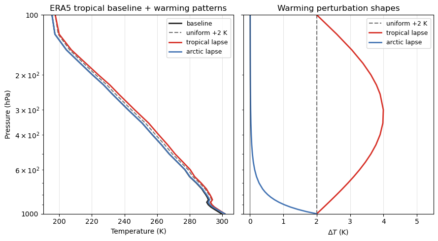
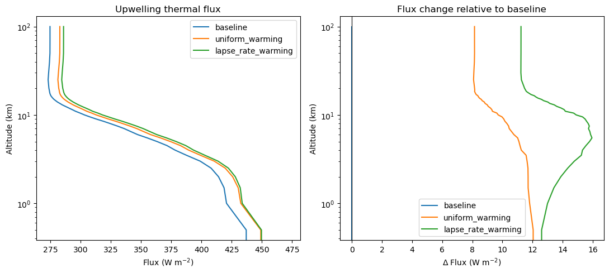
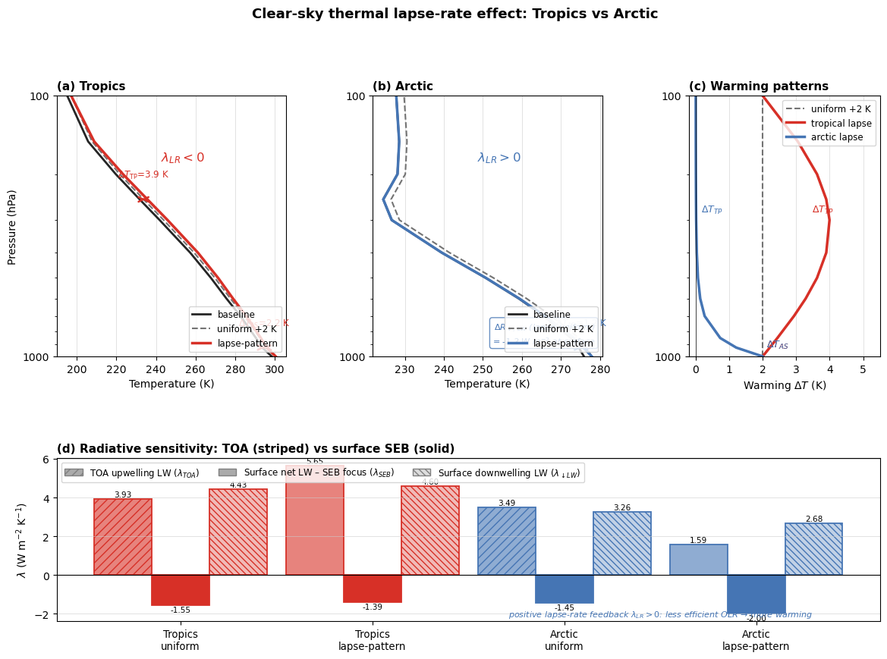
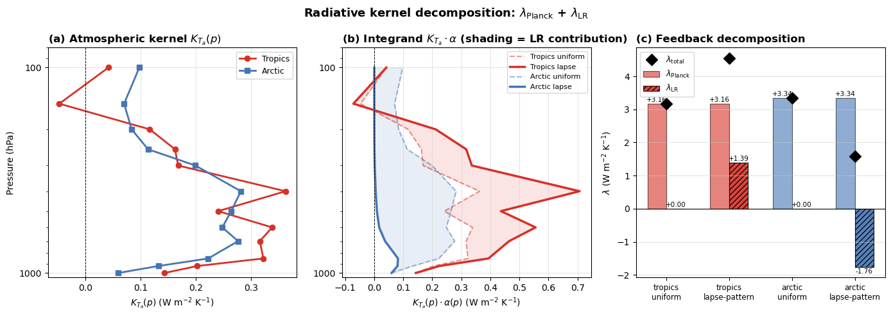

Advanced: A Simple Tropical Lapse-Rate Experiment#
This notebook is a continuation of the seasonal ERA5 profile workflow, but now we simplify the problem and focus on one mechanism: how the vertical pattern of warming changes the outgoing longwave radiation. Instead of sweeping over many Arctic profiles, we start from a single tropical ERA5 profile from the ARCO archive and construct three clear-sky thermal experiments.
We do not calculate a formal feedback parameter \(\lambda\) here. The goal is narrower: compare a vertically uniform warming with an upper-tropospheric amplified warming so we can see the part of the top-of-atmosphere response that points toward a lapse-rate feedback interpretation.
Warning
This notebook accesses ARCO ERA5 directly from Google Cloud Storage and runs a few clear-sky thermal simulations. It is much lighter than the seasonal sea-ice notebook, but it still requires network access and a working libRadtran setup.
import logging
from pathlib import Path
import gcsfs
import matplotlib.pyplot as plt
import numpy as np
import pandas as pd
import xarray as xr
import pyradtran
from pyradtran.config import load_config
logging.getLogger("pyradtran").setLevel(logging.CRITICAL)
Build a thermal configuration#
We use the same general pyRadtran pattern as in the other advanced notebooks, but keep the experiment intentionally small: clear sky, thermal only, one profile at a time.
cfg_thermal = load_config()
cfg_thermal.simulation_defaults.rte_solver = "disort"
cfg_thermal.simulation_defaults.mol_abs_param = "reptran coarse"
cfg_thermal.simulation_defaults.source = "thermal"
cfg_thermal.simulation_defaults.wavelength_nm = [3000, 100000]
cfg_thermal.simulation_defaults.integrate_wavelength = True
cfg_thermal.simulation_defaults.output_columns = [
"zout",
"lambda",
"sza",
"edir",
"eglo",
"edn",
"eup",
"enet",
"albedo",
"heat",
]
cfg_thermal.execution.max_workers = 4
cfg_thermal.execution.cleanup_temp_files = True
cfg_thermal.execution.timeout_seconds = 3600
cfg_thermal.output.filename_prefix = "lapse_rate_feedback_thermal"
thermal_config_path = Path("config/lapse_rate_feedback_thermal.yaml")
cfg_thermal.to_yaml(thermal_config_path)
thermal_config_path
2026-04-25 14:04:03,504 - pyradtran.config - INFO - Configuration written to config/lapse_rate_feedback_thermal.yaml
PosixPath('config/lapse_rate_feedback_thermal.yaml')
Load a tropical ERA5 profile from ARCO#
To keep the case simple, we sample one tropical ocean column from ARCO ERA5. This gives us a realistic temperature and humidity structure without the full batch-processing machinery from the previous notebook.
gcs = gcsfs.GCSFileSystem(token="anon")
path = "gs://gcp-public-data-arco-era5/ar/full_37-1h-0p25deg-chunk-1.zarr-v3"
ds_arco = xr.open_zarr(
gcs.get_mapper(path),
chunks="auto",
consolidated=True,
)
target_time = "2020-07-15T12:00:00"
target_lat = 12.0
target_lon = 180.0
profile_raw = ds_arco[[
"temperature",
"specific_humidity",
"geopotential",
"sea_surface_temperature",
]].sel(
time=target_time,
latitude=target_lat,
longitude=target_lon,
method="nearest",
).load()
ds_arco.close()
profile_raw
<xarray.Dataset> Size: 760B
Dimensions: (level: 37)
Coordinates:
latitude float32 4B 12.0
* level (level) int64 296B 1 2 3 5 7 ... 925 950 975 1000
longitude float32 4B 180.0
time datetime64[ns] 8B 2020-07-15T12:00:00
Data variables:
temperature (level) float32 148B 259.7 255.7 ... 297.4 299.6
specific_humidity (level) float32 148B 3.554e-06 ... 0.01504
geopotential (level) float32 148B 4.672e+05 4.159e+05 ... 878.0
sea_surface_temperature float32 4B 301.2
Attributes:
last_updated: 2026-04-25 02:34:30.972015+00:00
valid_time_start: 1940-01-01
valid_time_stop: 2025-12-31
valid_time_stop_era5t: 2026-04-19Prepare warming patterns#
We define two physically motivated warming perturbations that represent the canonical lapse-rate feedback patterns for the tropics and the Arctic.
Tropics (λ_LR < 0 — negative feedback): convection rapidly redistributes latent heat aloft, so the warming follows roughly the change in the moist-adiabatic lapse rate. We approximate this with a sin-arc in log₁₀-pressure space that gives ≈ 2× surface warming at ~300 hPa and returns to 1× at the tropopause (100 hPa).
Arctic (λ_LR > 0 — positive feedback): a stably stratified boundary layer prevents turbulent mixing and traps the warming near the surface. We approximate this with an exponential decay whose e-folding pressure thickness is ~150 hPa, giving surface-level warming that decays to near-zero by 700 hPa.
Specific humidity is left unchanged in both cases so the comparison isolates the temperature-profile effect.
Note
For a full seasonal climatology of tropical and Arctic profiles, see
era5_region_profiles.ipynb. Here we use a single ARCO ERA5 snapshot for speed.
def prepare_era5_profile(profile):
era5_profile = profile.rename(
{
"temperature": "t",
"specific_humidity": "q",
"geopotential": "z",
"level": "pressure_level",
"time": "valid_time",
}
).sortby("pressure_level", ascending=False)
era5_profile["time"] = era5_profile["valid_time"]
era5_profile["t"].attrs["units"] = "K"
era5_profile["q"].attrs["units"] = "kg/kg"
era5_profile["pressure_level"].attrs["units"] = "hPa"
return era5_profile[["pressure_level", "t", "q", "z"]].load()
def tropical_lapse_pattern(pressure_hpa, delta_t_surface=2.0):
"""
Tropical upper-tropospheric amplification following moist-adiabatic adjustment.
Uses a sin-arc in log10-pressure space:
amp = 1 + sin(pi * log10(1000/p)) -> 1 at 1000 hPa, 2 at ~316 hPa, 1 at 100 hPa.
Above the tropopause (~100 hPa) warming is set to a small residual (0.3 K).
lambda_LR < 0: more efficient OLR emission aloft -> negative feedback.
"""
p = np.asarray(pressure_hpa, dtype=float)
log_ratio = np.log10(1000.0 / np.maximum(p, 100.0)) # 0 at 1000 hPa, 1 at 100 hPa
amp = 1.0 + np.sin(np.pi * log_ratio) # arc 1 -> 2 -> 1
return delta_t_surface * np.where(p >= 100.0, amp, 0.3)
def arctic_lapse_pattern(pressure_hpa, delta_t_surface=2.0):
"""
Arctic near-surface amplification due to stable boundary-layer trapping.
Exponential decay from the surface with an e-folding pressure thickness
of ~150 hPa:
delta_t = delta_t_surface * exp(-(1000 - p) / 150)
At 1000 hPa: full delta_t_surface; at 850 hPa: ~37 %;
at 700 hPa: ~14 %; at 500 hPa: ~4 %.
lambda_LR > 0: less OLR increase (cold free troposphere barely warms)
-> positive feedback. BUT the warm boundary layer emits strongly
downward, which is the key surface energy-balance signature.
"""
p = np.asarray(pressure_hpa, dtype=float)
return delta_t_surface * np.exp(-(1000.0 - p) / 150.0)
# ---- sanity check ----
baseline_profile = prepare_era5_profile(profile_raw)
pressure = baseline_profile["pressure_level"]
uniform_delta_t = xr.full_like(pressure, 2.0).rename("uniform_delta_t")
tropical_delta_t = xr.DataArray(
tropical_lapse_pattern(pressure.values),
coords=pressure.coords,
dims=pressure.dims,
).rename("tropical_delta_t")
arctic_delta_t = xr.DataArray(
arctic_lapse_pattern(pressure.values),
coords=pressure.coords,
dims=pressure.dims,
).rename("arctic_delta_t")
uniform_profile = baseline_profile.copy(deep=True)
uniform_profile["t"] = baseline_profile["t"] + uniform_delta_t
lapse_profile = baseline_profile.copy(deep=True)
lapse_profile["t"] = baseline_profile["t"] + tropical_delta_t
print("Tropical lapse warming (K) at key levels:")
for pv in [1000, 500, 316, 250, 100]:
print(f" {pv:5.0f} hPa: {tropical_lapse_pattern(pv):.2f} K")
print("\nArctic lapse warming (K) at key levels:")
for pv in [1000, 925, 850, 700, 500, 300]:
print(f" {pv:5.0f} hPa: {arctic_lapse_pattern(pv):.2f} K")
Tropical lapse warming (K) at key levels:
1000 hPa: 2.00 K
500 hPa: 3.62 K
316 hPa: 4.00 K
250 hPa: 3.90 K
100 hPa: 2.00 K
Arctic lapse warming (K) at key levels:
1000 hPa: 2.00 K
925 hPa: 1.21 K
850 hPa: 0.74 K
700 hPa: 0.27 K
500 hPa: 0.07 K
300 hPa: 0.02 K
# Quick diagnostic: verify shape assumptions before running the simulations.
p = pressure.values
fig, axes = plt.subplots(1, 2, figsize=(9, 5), sharey=True)
C_BASE = "#252525"
C_UNI = "#737373"
C_TR = "#d73027"
C_ARC = "#4575b4"
# ---- Left: T profiles (tropical baseline + both warming patterns) ----
ax = axes[0]
t0 = baseline_profile["t"].values
ax.plot(t0, p, color=C_BASE, lw=2.0, label="baseline")
ax.plot(t0 + 2.0, p, color=C_UNI, lw=1.5, ls="--", label="uniform +2 K")
ax.plot(t0 + tropical_delta_t.values, p, color=C_TR, lw=2.0, label="tropical lapse")
ax.plot(t0 + arctic_delta_t.values, p, color=C_ARC, lw=2.0, label="arctic lapse")
ax.set_yscale("log")
ax.set_ylim(1000, 100)
ax.yaxis.set_major_formatter(plt.FuncFormatter(lambda v, _: f"{int(v)}"))
ax.set_xlabel("Temperature (K)")
ax.set_ylabel("Pressure (hPa)")
ax.set_title("ERA5 tropical baseline + warming patterns")
ax.legend(fontsize=9)
ax.grid(which="major", lw=0.4, color="#cccccc")
# ---- Right: ΔT shape functions ----
ax = axes[1]
ax.axvline(2, color=C_UNI, lw=1.5, ls="--", label="uniform +2 K")
ax.plot(tropical_delta_t.values, p, color=C_TR, lw=2.0, label="tropical lapse")
ax.plot(arctic_delta_t.values, p, color=C_ARC, lw=2.0, label="arctic lapse")
ax.set_yscale("log")
ax.set_ylim(1000, 100)
ax.yaxis.set_major_formatter(plt.FuncFormatter(lambda v, _: f"{int(v)}"))
ax.set_xlabel(r"$\Delta T$ (K)")
ax.set_title("Warming perturbation shapes")
ax.set_xlim(-0.2, 5.5)
ax.axvline(0, color="k", lw=0.5)
ax.legend(fontsize=9)
ax.grid(which="major", lw=0.4, color="#cccccc")
plt.tight_layout()

Run three clear-sky thermal simulations#
The baseline case uses the original sea-surface temperature. Both warmed cases use a surface warming of 2 K, so the difference between them is entirely due to the vertical distribution of atmospheric warming.
def make_input_dataset(surface_temperature):
altitudes = np.concatenate([np.arange(0, 20.5, 0.5), [25, 30, 40, 50, 70, 100]])
return xr.Dataset(
coords={
"time": [pd.to_datetime(str(profile_raw["time"].values))],
"latitude": ("time", [float(profile_raw["latitude"].values)]),
"longitude": ("time", [float(profile_raw["longitude"].values)]),
"altitude": ("altitude", altitudes),
},
data_vars={
"albedo": ("time", [0.06]),
"surface_temperature": ("time", [surface_temperature]),
},
)
baseline_surface_temperature = float(profile_raw["sea_surface_temperature"].values)
warmed_surface_temperature = baseline_surface_temperature + 2.0
experiments = {
"baseline": {
"input_ds": make_input_dataset(baseline_surface_temperature),
"atmosphere": baseline_profile,
},
"uniform_warming": {
"input_ds": make_input_dataset(warmed_surface_temperature),
"atmosphere": uniform_profile,
},
"lapse_rate_warming": {
"input_ds": make_input_dataset(warmed_surface_temperature),
"atmosphere": lapse_profile,
},
}
atm_cache_dir = cfg_thermal.paths.working_dir / "era5_atmospheres"
simulations = {}
for name, experiment in experiments.items():
if atm_cache_dir.exists():
for cache_file in atm_cache_dir.glob("era5_atm_*.dat"):
cache_file.unlink()
simulations[name] = experiment["input_ds"].pyradtran.run(
config_path=thermal_config_path,
surface_temperature_var="surface_temperature",
albedo_var="albedo",
return_dataset=True,
save_to_file=False,
era5_atmosphere=experiment["atmosphere"],
show_progress=False,
)
simulations["baseline"]
<xarray.Dataset> Size: 4kB
Dimensions: (time: 1, altitude: 47)
Coordinates:
* time (time) datetime64[ns] 8B 2020-07-15T12:00:00
* altitude (altitude) float64 376B 0.0 0.5 1.0 1.5 ... 40.0 50.0 70.0 100.0
Data variables:
zout (altitude, time) float64 376B 0.0 0.5 1.0 1.5 ... 50.0 70.0 100.0
lambda (altitude, time) float64 376B 3.001e+03 3.001e+03 ... 3.001e+03
sza (altitude, time) float64 376B 0.0 0.0 0.0 0.0 ... 0.0 0.0 0.0 0.0
edir (altitude, time) float64 376B 0.0 0.0 0.0 0.0 ... 0.0 0.0 0.0 0.0
eglo (altitude, time) float64 376B 383.1 344.6 ... 0.0004023 4.936e-06
edn (altitude, time) float64 376B 383.1 344.6 ... 0.0004023 4.936e-06
eup (altitude, time) float64 376B 459.6 437.1 420.8 ... 274.7 274.7
enet (altitude, time) float64 376B -76.52 -92.53 ... -274.7 -274.7
albedo (altitude, time) float64 376B 1.2 1.269 ... 6.826e+05 5.564e+07
heat (altitude, time) float64 376B -2.385 -2.85 -1.931 ... 0.0925 0.0
Attributes:
point_id: 20200715_120000_12.00_180.00_0
time: 2020-07-15T12:00:00
latitude: 12.0
longitude: 180.0
albedo: 0.06
surface_temperature: 301.1914978027344
surface_type: None
altitude: None
generated_by: pyradtran
pyradtran_version: unified_system
generation_date: 2026-04-25T14:05:22.081232Compare the radiative response#
A useful first diagnostic is the upwelling thermal flux at the top of atmosphere. If the upper troposphere warms more than the surface, the atmosphere can emit more efficiently to space, so the longwave response differs from the vertically uniform case even though both cases use the same surface warming.
summary = pd.DataFrame(
{
"case": list(simulations.keys()),
"surface_temperature_K": [
float(experiments[name]["input_ds"]["surface_temperature"].values[0])
for name in simulations
],
"toa_upwelling_longwave_Wm-2": [
float(ds_sim["eup"].isel(altitude=-1).squeeze())
for ds_sim in simulations.values()
],
"surface_net_longwave_Wm-2": [
float(ds_sim["enet"].isel(altitude=0).squeeze())
for ds_sim in simulations.values()
],
}
).set_index("case")
summary["delta_olr_vs_baseline"] = (
summary["toa_upwelling_longwave_Wm-2"]
- summary.loc["baseline", "toa_upwelling_longwave_Wm-2"]
)
summary
| surface_temperature_K | toa_upwelling_longwave_Wm-2 | surface_net_longwave_Wm-2 | delta_olr_vs_baseline | |
|---|---|---|---|---|
| case | ||||
| baseline | 301.191498 | 274.6530 | -76.52301 | 0.0000 |
| uniform_warming | 303.191498 | 282.7966 | -79.97522 | 8.1436 |
| lapse_rate_warming | 303.191498 | 285.8831 | -79.67938 | 11.2301 |
fig, axes = plt.subplots(1, 2, figsize=(11, 5))
for name, ds_sim in simulations.items():
ds_sim["eup"].squeeze().plot(y="altitude", ax=axes[0], label=name)
(ds_sim["eup"] - simulations["baseline"]["eup"]).squeeze().plot(
y="altitude",
ax=axes[1],
label=name,
)
axes[0].set_title("Upwelling thermal flux")
axes[0].set_xlabel(r"Flux (W m$^{-2}$)")
axes[0].set_ylabel("Altitude (km)")
axes[0].legend()
axes[0].set_yscale("log")
axes[1].set_title("Flux change relative to baseline")
axes[1].set_xlabel(r"$\Delta$ Flux (W m$^{-2}$)")
axes[1].set_ylabel("Altitude (km)")
axes[1].axvline(0, color="k", linewidth=0.8)
axes[1].legend()
axes[1].set_yscale("log")
plt.tight_layout()

The quantity to watch is the difference between uniform_warming and lapse_rate_warming at the top of atmosphere. Both experiments warm the surface by the same amount, so that gap is the piece coming from the vertical structure of atmospheric warming rather than the imposed surface change itself.
That is not yet a full feedback calculation, but it is the core radiative idea behind a lapse-rate feedback: where the warming occurs matters for how efficiently the column emits longwave radiation back to space.
Toward a simple \(\lambda\)-style normalization#
A next step toward feedback language is to normalize flux changes by imposed surface warming. Here we keep it simple and diagnostic:
TOA longwave sensitivity: \(\Delta \mathrm{OLR} / \Delta T_s\)
Surface longwave sensitivity: \(\Delta \mathrm{net\ LW}_{\mathrm{surface}} / \Delta T_s\)
This is still not a full climate feedback decomposition, but it puts the experiment on a per-kelvin basis.
summary_lambda = summary.copy()
summary_lambda["delta_surface_temp_K"] = (
summary_lambda["surface_temperature_K"] - summary_lambda.loc["baseline", "surface_temperature_K"]
)
for column in ["toa_upwelling_longwave_Wm-2", "surface_net_longwave_Wm-2"]:
delta_name = f"delta_{column}"
sens_name = f"sensitivity_{column}_perK"
summary_lambda[delta_name] = summary_lambda[column] - summary_lambda.loc["baseline", column]
summary_lambda[sens_name] = summary_lambda[delta_name] / summary_lambda["delta_surface_temp_K"]
summary_lambda
| surface_temperature_K | toa_upwelling_longwave_Wm-2 | surface_net_longwave_Wm-2 | delta_olr_vs_baseline | delta_surface_temp_K | delta_toa_upwelling_longwave_Wm-2 | sensitivity_toa_upwelling_longwave_Wm-2_perK | delta_surface_net_longwave_Wm-2 | sensitivity_surface_net_longwave_Wm-2_perK | |
|---|---|---|---|---|---|---|---|---|---|
| case | |||||||||
| baseline | 301.191498 | 274.6530 | -76.52301 | 0.0000 | 0.0 | 0.0000 | NaN | 0.00000 | NaN |
| uniform_warming | 303.191498 | 282.7966 | -79.97522 | 8.1436 | 2.0 | 8.1436 | 4.07180 | -3.45221 | -1.726105 |
| lapse_rate_warming | 303.191498 | 285.8831 | -79.67938 | 11.2301 | 2.0 | 11.2301 | 5.61505 | -3.15637 | -1.578185 |
Short Side Note: TOA vs Surface Perspective#
For tropical lapse-rate interpretation, TOA longwave response is a clean first diagnostic because it tracks how efficiently the atmospheric column emits to space. In the Arctic, the surface energy budget is often the more decision-relevant view: small changes in downwelling and upwelling longwave at the surface directly affect sea ice, ocean-atmosphere coupling, and near-surface temperature evolution.
So in the next section we compare both metrics, but we emphasize surface-net longwave differences for the Arctic case.
Arctic vs Tropics: same framework, different perspective#
Now we construct one Arctic profile and one tropical profile, then run three clear-sky thermal cases per region: baseline, uniform +2 K warming, and a region-shaped warming profile.
Tropics: upper-tropospheric amplified warming (reduced lapse-rate style)
Arctic: near-surface amplified warming (boundary-layer focused)
We report both TOA and surface sensitivities, with extra attention to surface-net longwave in the Arctic.
def make_input_dataset_for_profile(profile_point, surface_temperature):
altitudes = np.concatenate([np.arange(0, 20.5, 0.5), [25, 30, 40, 50, 70, 100]])
valid_time = pd.to_datetime(str(profile_point["time"].values))
lat_val = float(profile_point["latitude"].values) if "latitude" in profile_point.coords else float(profile_point.attrs.get("representative_lat", 0.0))
lon_val = float(profile_point["longitude"].values) if "longitude" in profile_point.coords else float(profile_point.attrs.get("representative_lon", 0.0))
return xr.Dataset(
coords={
"time": [valid_time],
"latitude": ("time", [lat_val]),
"longitude": ("time", [lon_val]),
"altitude": ("altitude", altitudes),
},
data_vars={
"albedo": ("time", [0.06]),
"surface_temperature": ("time", [surface_temperature]),
},
)
def build_region_warming(pressure, region):
"""Return (uniform_delta_t, lapse_delta_t) xarray DataArrays for the given region.
Uses the physically motivated functions defined in the setup cell:
- tropical_lapse_pattern: sin-arc amplification peaking at ~316 hPa
- arctic_lapse_pattern: exponential decay from surface (e-folding ~150 hPa)
"""
uniform = xr.full_like(pressure, 2.0).rename("uniform_delta_t")
if region == "tropics":
shaped_vals = tropical_lapse_pattern(pressure.values)
elif region == "arctic":
shaped_vals = arctic_lapse_pattern(pressure.values)
else:
raise ValueError(f"Unknown region: {region}")
shaped = xr.DataArray(
shaped_vals,
coords=pressure.coords,
dims=pressure.dims,
).rename("shaped_delta_t")
return uniform, shaped
def run_region_experiment(profile_point, region_name):
baseline = prepare_era5_profile(profile_point)
pressure = baseline["pressure_level"]
uniform_delta, shaped_delta = build_region_warming(pressure, region_name)
uniform_profile_local = baseline.copy(deep=True)
uniform_profile_local["t"] = baseline["t"] + uniform_delta
shaped_profile_local = baseline.copy(deep=True)
shaped_profile_local["t"] = baseline["t"] + shaped_delta
sst_baseline = float(profile_point["sea_surface_temperature"].values)
sst_warmed = sst_baseline + 2.0
cases = {
"baseline": {
"input_ds": make_input_dataset_for_profile(profile_point, sst_baseline),
"atmosphere": baseline,
},
"uniform_warming": {
"input_ds": make_input_dataset_for_profile(profile_point, sst_warmed),
"atmosphere": uniform_profile_local,
},
"lapse_pattern_warming": {
"input_ds": make_input_dataset_for_profile(profile_point, sst_warmed),
"atmosphere": shaped_profile_local,
},
}
local_sims = {}
for case_name, case in cases.items():
if atm_cache_dir.exists():
for cache_file in atm_cache_dir.glob("era5_atm_*.dat"):
cache_file.unlink()
local_sims[case_name] = case["input_ds"].pyradtran.run(
config_path=thermal_config_path,
surface_temperature_var="surface_temperature",
albedo_var="albedo",
return_dataset=True,
save_to_file=False,
era5_atmosphere=case["atmosphere"],
show_progress=False,
)
table = pd.DataFrame(
{
"case": list(local_sims.keys()),
"surface_temperature_K": [
float(cases[name]["input_ds"]["surface_temperature"].values[0])
for name in local_sims
],
"toa_upwelling_longwave_Wm-2": [
float(ds_sim["eup"].isel(altitude=-1).squeeze())
for ds_sim in local_sims.values()
],
"surface_net_longwave_Wm-2": [
float(ds_sim["enet"].isel(altitude=0).squeeze())
for ds_sim in local_sims.values()
],
"surface_downwelling_lw_Wm-2": [
float(ds_sim["edn"].isel(altitude=0).squeeze())
for ds_sim in local_sims.values()
],
}
).set_index("case")
table["delta_surface_temp_K"] = (
table["surface_temperature_K"] - table.loc["baseline", "surface_temperature_K"]
)
table["dtoa"] = table["toa_upwelling_longwave_Wm-2"] - table.loc["baseline", "toa_upwelling_longwave_Wm-2"]
table["dseblw"] = table["surface_net_longwave_Wm-2"] - table.loc["baseline", "surface_net_longwave_Wm-2"]
table["ddnlw"] = table["surface_downwelling_lw_Wm-2"] - table.loc["baseline", "surface_downwelling_lw_Wm-2"]
table["lambda_toa_perK"] = table["dtoa"] / table["delta_surface_temp_K"]
table["lambda_surface_perK"] = table["dseblw"] / table["delta_surface_temp_K"]
table["lambda_dndlw_perK"] = table["ddnlw"] / table["delta_surface_temp_K"]
table["region"] = region_name
return table, local_sims
# ------------------------------------------------------------------
# Load profiles: prefer processed climatology, fall back to ARCO snapshot
# ------------------------------------------------------------------
processed_path = Path("data/era5_region_profiles.nc")
common_time = "2020-07-15T12:00:00" # used as synthetic time stamp for climatological profiles
if processed_path.exists():
print("Loading from processed climatology…")
ds_region = xr.open_dataset(processed_path)
# Use JJA for Arctic summer (most relevant season for sea ice)
profile_tropics = (
ds_region.sel(region="tropics", season="JJA")
.rename({"t": "temperature", "q": "specific_humidity",
"z": "geopotential", "pressure_level": "level"})
.assign_coords(
time=pd.to_datetime(common_time),
latitude=12.0, # representative tropical ocean point
longitude=180.0,
)
)
profile_arctic = (
ds_region.sel(region="arctic", season="JJA")
.rename({"t": "temperature", "q": "specific_humidity",
"z": "geopotential", "pressure_level": "level"})
.assign_coords(
time=pd.to_datetime(common_time),
latitude=80.0, # representative Arctic Ocean point
longitude=0.0,
)
)
# synthetic SST: near-surface temperature from the mean profile
profile_tropics["sea_surface_temperature"] = float(
profile_tropics["temperature"].sel(level=1000.0, method="nearest").values
)
profile_arctic["sea_surface_temperature"] = float(
profile_arctic["temperature"].sel(level=1000.0, method="nearest").values
)
else:
print("Processed file not found – fetching single ARCO snapshots (run era5_region_profiles.ipynb first for better results).")
gcs_compare = gcsfs.GCSFileSystem(token="anon")
arco_path = "gs://gcp-public-data-arco-era5/ar/full_37-1h-0p25deg-chunk-1.zarr-v3"
ds_arco_compare = xr.open_zarr(
gcs_compare.get_mapper(arco_path), chunks="auto", consolidated=True
)
_vars = ["temperature", "specific_humidity", "geopotential", "sea_surface_temperature"]
profile_tropics = ds_arco_compare[_vars].sel(
time=common_time, latitude=12.0, longitude=180.0, method="nearest"
).load()
profile_arctic = ds_arco_compare[_vars].sel(
time=common_time, latitude=80.0, longitude=0.0, method="nearest"
).load()
ds_arco_compare.close()
table_tropics, sims_tropics = run_region_experiment(profile_tropics, "tropics")
table_arctic, sims_arctic = run_region_experiment(profile_arctic, "arctic")
regional_summary = pd.concat([table_tropics, table_arctic])
regional_summary
Loading from processed climatology…
| surface_temperature_K | toa_upwelling_longwave_Wm-2 | surface_net_longwave_Wm-2 | surface_downwelling_lw_Wm-2 | delta_surface_temp_K | dtoa | dseblw | ddnlw | lambda_toa_perK | lambda_surface_perK | lambda_dndlw_perK | region | |
|---|---|---|---|---|---|---|---|---|---|---|---|---|
| case | ||||||||||||
| baseline | 298.477875 | 275.9196 | -60.42618 | 383.6239 | 0.0 | 0.0000 | 0.00000 | 0.0000 | NaN | NaN | NaN | tropics |
| uniform_warming | 300.477875 | 283.7797 | -63.53494 | 392.4820 | 2.0 | 7.8601 | -3.10876 | 8.8581 | 3.93005 | -1.554380 | 4.42905 | tropics |
| lapse_pattern_warming | 300.477875 | 287.2274 | -63.20831 | 392.8294 | 2.0 | 11.3078 | -2.78213 | 9.2055 | 5.65390 | -1.391065 | 4.60275 | tropics |
| baseline | 275.858887 | 234.8417 | -77.52226 | 243.9498 | 0.0 | 0.0000 | 0.00000 | 0.0000 | NaN | NaN | NaN | arctic |
| uniform_warming | 277.858887 | 241.8163 | -80.42809 | 250.4690 | 2.0 | 6.9746 | -2.90583 | 6.5192 | 3.48730 | -1.452915 | 3.25960 | arctic |
| lapse_pattern_warming | 277.858887 | 238.0214 | -81.52103 | 249.3063 | 2.0 | 3.1797 | -3.99877 | 5.3565 | 1.58985 | -1.999385 | 2.67825 | arctic |
import matplotlib.gridspec as mgridspec
import matplotlib.patches as mpatches
import matplotlib.ticker as mticker
from pathlib import Path as _P
C_BASE = "#252525"
C_UNI = "#737373"
C_TR = "#d73027" # red – tropics
C_ARC = "#4575b4" # blue – arctic
PMIN, PMAX = 100, 1000
def _setup_profile_ax(ax, title):
ax.set_yscale("log")
ax.set_ylim(PMAX, PMIN)
ax.yaxis.set_major_formatter(mticker.FuncFormatter(lambda v, _: f"{int(v)}"))
ax.yaxis.set_minor_formatter(mticker.NullFormatter())
ax.set_xlabel("Temperature (K)", fontsize=10)
ax.set_ylabel("Pressure (hPa)", fontsize=10)
ax.set_title(title, loc="left", fontweight="bold", fontsize=11)
ax.grid(which="major", lw=0.4, color="#cccccc", zorder=0)
def _arrow(ax, p_val, p_arr, t_a, t_b, color, label):
"""Double-headed annotation arrow at pressure p_val between t_a and t_b."""
idx = int(np.argmin(np.abs(p_arr - p_val)))
ta, tb = t_a[idx], t_b[idx]
if abs(tb - ta) < 0.05:
return
ax.annotate(
"",
xy=(tb, p_arr[idx]),
xytext=(ta, p_arr[idx]),
arrowprops=dict(arrowstyle="<->", color=color, lw=1.8, mutation_scale=11),
)
ax.text(
(ta + tb) / 2,
p_arr[idx] / 1.18, # just above the arrow in log space
f"$\\Delta T_{{\\mathrm{{{label}}}}}$={abs(tb - ta):.1f} K",
ha="center", va="bottom", fontsize=8.5, color=color,
)
# ============================================================
# Build actual profiles with revised warming patterns
# ============================================================
trp_base = prepare_era5_profile(profile_tropics)
arc_base = prepare_era5_profile(profile_arctic)
p = trp_base["pressure_level"].values # same levels for both
t_trp_base = trp_base["t"].values
t_arc_base = arc_base["t"].values
t_trp_uni = t_trp_base + 2.0
t_arc_uni = t_arc_base + 2.0
t_trp_laps = t_trp_base + tropical_lapse_pattern(p)
t_arc_laps = t_arc_base + arctic_lapse_pattern(p)
# ============================================================
# Figure layout
# ============================================================
fig = plt.figure(figsize=(14, 9))
gs = mgridspec.GridSpec(
2, 3,
figure=fig,
width_ratios=[2.4, 2.4, 2.0],
height_ratios=[4.0, 2.5],
hspace=0.48, wspace=0.40,
)
ax_trp = fig.add_subplot(gs[0, 0])
ax_arc = fig.add_subplot(gs[0, 1], sharey=ax_trp)
ax_dt = fig.add_subplot(gs[0, 2], sharey=ax_trp)
ax_lam = fig.add_subplot(gs[1, :])
# ============================================================
# Panel (a): Tropics T(p)
# ============================================================
_setup_profile_ax(ax_trp, "(a) Tropics")
ax_trp.plot(t_trp_base, p, color=C_BASE, lw=2.0, label="baseline")
ax_trp.plot(t_trp_uni, p, color=C_UNI, lw=1.5, ls="--", label="uniform +2 K")
ax_trp.plot(t_trp_laps, p, color=C_TR, lw=2.5, label="lapse-pattern")
# Annotate ΔT_TP and ΔT_AS vs baseline
_arrow(ax_trp, 250, p, t_trp_base, t_trp_laps, C_TR, "TP")
_arrow(ax_trp, 950, p, t_trp_base, t_trp_laps, C_TR, "AS")
ax_trp.text(0.55, 0.75, r"$\lambda_{LR} < 0$",
transform=ax_trp.transAxes, ha="center", fontsize=12,
color=C_TR, fontweight="bold")
ax_trp.legend(fontsize=8.5, loc="lower right")
# ============================================================
# Panel (b): Arctic T(p)
# ============================================================
_setup_profile_ax(ax_arc, "(b) Arctic")
ax_arc.set_ylabel("") # shared y-axis
ax_arc.plot(t_arc_base, p, color=C_BASE, lw=2.0, label="baseline")
ax_arc.plot(t_arc_uni, p, color=C_UNI, lw=1.5, ls="--", label="uniform +2 K")
ax_arc.plot(t_arc_laps, p, color=C_ARC, lw=2.5, label="lapse-pattern")
_arrow(ax_arc, 250, p, t_arc_base, t_arc_laps, C_ARC, "TP")
_arrow(ax_arc, 950, p, t_arc_base, t_arc_laps, C_ARC, "AS")
ax_arc.text(0.55, 0.75, r"$\lambda_{LR} > 0$",
transform=ax_arc.transAxes, ha="center", fontsize=12,
color=C_ARC, fontweight="bold")
# Arctic SEB highlight: extra downwelling LW vs uniform
ddnlw_arc = (
table_arctic.loc["lapse_pattern_warming", "ddnlw"]
- table_arctic.loc["uniform_warming", "ddnlw"]
)
ax_arc.text(
0.97, 0.04,
f"$\\Delta R_{{\\downarrow,\\,LW}}$ (lapse\u2013uniform)\n= {ddnlw_arc:+.1f} W m$^{{-2}}$ at surface",
transform=ax_arc.transAxes, ha="right", va="bottom", fontsize=8.0,
color=C_ARC, style="italic",
bbox=dict(boxstyle="round,pad=0.3", facecolor="white", alpha=0.8, edgecolor=C_ARC),
)
ax_arc.legend(fontsize=8.5, loc="lower right")
# ============================================================
# Panel (c): ΔT shape comparison
# ============================================================
ax_dt.set_yscale("log")
ax_dt.set_ylim(PMAX, PMIN)
ax_dt.yaxis.set_major_formatter(mticker.FuncFormatter(lambda v, _: f"{int(v)}"))
ax_dt.yaxis.set_minor_formatter(mticker.NullFormatter())
ax_dt.set_ylabel("") # shared
ax_dt.set_xlabel(r"Warming $\Delta T$ (K)", fontsize=10)
ax_dt.set_title("(c) Warming patterns", loc="left", fontweight="bold", fontsize=11)
ax_dt.grid(which="major", lw=0.4, color="#cccccc", zorder=0)
ax_dt.axvline(2, color=C_UNI, lw=1.5, ls="--", label="uniform +2 K")
ax_dt.plot(tropical_lapse_pattern(p), p, color=C_TR, lw=2.5, label="tropical lapse")
ax_dt.plot(arctic_lapse_pattern(p), p, color=C_ARC, lw=2.5, label="arctic lapse")
ax_dt.axvline(0, color="k", lw=0.5)
ax_dt.set_xlim(-0.2, 5.5)
ax_dt.legend(fontsize=8.5)
ax_dt.text(3.8, 280, r"$\Delta T_{TP}$", color=C_TR, fontsize=9, ha="center")
ax_dt.text(0.5, 280, r"$\Delta T_{TP}$", color=C_ARC, fontsize=9, ha="center")
ax_dt.text(2.1, 920, r"$\Delta T_{AS}$", color=C_TR, fontsize=9, ha="left")
ax_dt.text(2.1, 920, r"$\Delta T_{AS}$", color=C_ARC, fontsize=9, ha="left")
# ============================================================
# Panel (d): Radiative sensitivities
# ============================================================
ax_lam.set_title(
"(d) Radiative sensitivity: TOA (striped) vs surface SEB (solid)",
loc="left", fontweight="bold", fontsize=11,
)
ax_lam.set_ylabel(r"$\lambda$ (W m$^{-2}$ K$^{-1}$)", fontsize=10)
ax_lam.grid(axis="y", lw=0.4, color="#cccccc", zorder=0)
cases_plot = [
("Tropics\nuniform", "tropics", "uniform_warming", C_TR, "///"),
("Tropics\nlapse-pattern", "tropics", "lapse_pattern_warming", C_TR, ""),
("Arctic\nuniform", "arctic", "uniform_warming", C_ARC, "///"),
("Arctic\nlapse-pattern", "arctic", "lapse_pattern_warming", C_ARC, ""),
]
x = np.arange(len(cases_plot))
bw = 0.30
toa_vals, seb_vals, dn_vals = [], [], []
colors, hatches, labels = [], [], []
for lbl, region, case, color, hatch in cases_plot:
tab = table_tropics if region == "tropics" else table_arctic
toa_vals.append(tab.loc[case, "lambda_toa_perK"] if case in tab.index else 0.0)
seb_vals.append(tab.loc[case, "lambda_surface_perK"] if case in tab.index else 0.0)
dn_vals.append(tab.loc[case, "lambda_dndlw_perK"] if case in tab.index else 0.0)
colors.append(color)
hatches.append(hatch)
labels.append(lbl)
bars_toa = ax_lam.bar(
x - bw, toa_vals, bw,
color=[c + "99" for c in colors], hatch=hatches,
edgecolor=colors, linewidth=1.3,
)
bars_seb = ax_lam.bar(
x, seb_vals, bw,
color=colors, edgecolor=colors, linewidth=1.3,
)
bars_dn = ax_lam.bar(
x + bw, dn_vals, bw,
color=[c + "55" for c in colors], edgecolor=colors, linewidth=1.3,
hatch="\\\\\\\\"
)
for bars in (bars_toa, bars_seb, bars_dn):
for bar in bars:
h = bar.get_height()
sign = 1 if h >= 0 else -1
ax_lam.text(
bar.get_x() + bar.get_width() / 2,
h + sign * 0.04,
f"{h:.2f}",
ha="center",
va="bottom" if h >= 0 else "top",
fontsize=7.5,
)
ax_lam.set_xticks(x)
ax_lam.set_xticklabels(labels, fontsize=9.5)
ax_lam.axhline(0, color="k", lw=0.8)
legend_handles = [
mpatches.Patch(facecolor="#aaaaaa", hatch="///", edgecolor="gray", label=r"TOA upwelling LW ($\lambda_{TOA}$)"),
mpatches.Patch(facecolor="#aaaaaa", edgecolor="gray", label=r"Surface net LW – SEB focus ($\lambda_{SEB}$)"),
mpatches.Patch(facecolor="#dddddd", hatch="\\\\\\\\", edgecolor="gray", label=r"Surface downwelling LW ($\lambda_{\downarrow LW}$)"),
]
ax_lam.legend(handles=legend_handles, fontsize=8.5, loc="upper left", ncol=3)
# Annotate sign interpretation
ax_lam.annotate(
r"positive lapse-rate feedback $\lambda_{LR}>0$: less efficient OLR → more warming",
xy=(2.5, min(seb_vals) - 0.15), fontsize=8, color=C_ARC,
ha="center", style="italic",
)
fig.suptitle(
"Clear-sky thermal lapse-rate effect: Tropics vs Arctic",
fontsize=13, fontweight="bold", y=1.01,
)
out_path = _P("../../output/lapse_rate_feedback_fig.pdf")
out_path.parent.mkdir(parents=True, exist_ok=True)
fig.savefig(out_path, bbox_inches="tight", dpi=150)
print(f"Saved to {out_path}")
plt.show()
Saved to ../../output/lapse_rate_feedback_fig.pdf

In this simple setup, both regions can show a clear TOA signal, but the interpretation priority differs.
For the tropics, the TOA-per-kelvin contrast between uniform and lapse-shaped warming is a direct way to diagnose lapse-rate behavior. For the Arctic, the surface-per-kelvin contrast is often more actionable, because it maps more directly onto local surface warming and sea-ice relevant energetics.
So a practical workflow is: use TOA metrics to understand radiative mechanism, then use surface energy budget metrics to understand Arctic impact.
Radiative kernels and formal feedback decomposition#
The experiments we have already run give us everything needed to compute proper radiative kernels and decompose the TOA longwave response into the standard Planck and lapse-rate feedbacks (Soden & Held 2006; Shell et al. 2008).
Definitions#
The total radiative response at TOA to a surface warming \(\Delta T_s\) is
We split this into two kernels:
Kernel |
Forcing |
Physical meaning |
|---|---|---|
\(K_{T_s}\) |
+1 K at surface only |
Planck response of the surface |
\(K_{T_a}(p)\) |
+1 K at level \(p\), surface unchanged |
Planck response of the atmosphere |
From those we get the standard feedbacks (W m⁻² K⁻¹):
where \(\alpha(p) = \Delta T(p) / \Delta T_s\) is the normalised warming profile.
The total feedback is then \(\lambda = \lambda_{\mathrm{Planck}} + \lambda_{\mathrm{LR}}\).
# =============================================================
# Step 1 – build finite-difference radiative kernels via pyRadtran
# =============================================================
# We perturb:
# (a) surface temperature +1 K, atmosphere unchanged -> K_Ts
# (b) one pressure level at a time +1 K, surface unchanged -> K_Ta(p)
#
# All runs reuse the existing thermal config and the climatological
# profiles already loaded (trp_base / arc_base from Cell 22).
# =============================================================
DELTA_T_KERNEL = 1.0 # finite-difference step (K)
KERNEL_LEVELS = [1000, 925, 850, 700, 600, 500, 400, 300, 250, 200, 150, 100] # hPa
def _run_single(profile, profile_point, extra_tag=""):
"""Run one clear-sky thermal simulation; return the Dataset."""
if atm_cache_dir.exists():
for f in atm_cache_dir.glob("era5_atm_*.dat"):
f.unlink()
# Shift time slightly so each run gets a unique cache key
import hashlib
tag = hashlib.md5(extra_tag.encode()).hexdigest()[:6]
# We exploit the latitude offset trick: nudge lat by a tiny unique amount
# so pyRadtran doesn't reuse a stale cached atmosphere file.
lat_offset = int(tag, 16) * 1e-6 # sub-microdegree, physically irrelevant
lat_base = float(profile_point["latitude"].values) if "latitude" in profile_point.coords else 0.0
lon_base = float(profile_point["longitude"].values) if "longitude" in profile_point.coords else 0.0
altitudes = np.concatenate([np.arange(0, 20.5, 0.5), [25, 30, 40, 50, 70, 100]])
valid_time = pd.to_datetime(str(profile_point["time"].values))
sst = float(profile_point["sea_surface_temperature"].values)
input_ds = xr.Dataset(
coords={
"time": [valid_time],
"latitude": ("time", [lat_base + lat_offset]),
"longitude": ("time", [lon_base]),
"altitude": ("altitude", altitudes),
},
data_vars={
"albedo": ("time", [0.06]),
"surface_temperature": ("time", [sst]),
},
)
return input_ds.pyradtran.run(
config_path=thermal_config_path,
surface_temperature_var="surface_temperature",
albedo_var="albedo",
return_dataset=True,
save_to_file=False,
era5_atmosphere=profile,
show_progress=False,
)
def compute_kernels(base_profile, base_profile_point, region_label):
"""
Compute K_Ts and K_Ta(p) for the given ERA5 profile.
Returns
-------
k_ts : float – TOA OLR change per K surface warming (W m⁻² K⁻¹)
k_ta : dict – {pressure_hPa: TOA OLR change per K atmospheric warming}
ds_ref : Dataset – reference (unperturbed) simulation
"""
print(f"\n[{region_label}] Reference run …")
ds_ref = _run_single(base_profile, base_profile_point, f"{region_label}_ref")
olr_ref = float(ds_ref["eup"].isel(altitude=-1).squeeze())
# ---- K_Ts: surface +1 K only -----------------------------------
print(f"[{region_label}] K_Ts …")
# Build a profile with unchanged atmosphere but sst+1 K
lat_base = float(base_profile_point["latitude"].values) if "latitude" in base_profile_point.coords else 0.0
lon_base = float(base_profile_point["longitude"].values) if "longitude" in base_profile_point.coords else 0.0
altitudes = np.concatenate([np.arange(0, 20.5, 0.5), [25, 30, 40, 50, 70, 100]])
valid_time = pd.to_datetime(str(base_profile_point["time"].values))
sst = float(base_profile_point["sea_surface_temperature"].values)
import hashlib
tag = hashlib.md5(f"{region_label}_kts".encode()).hexdigest()[:6]
lat_off = int(tag, 16) * 1e-6
if atm_cache_dir.exists():
for f in atm_cache_dir.glob("era5_atm_*.dat"):
f.unlink()
input_kts = xr.Dataset(
coords={
"time": [valid_time],
"latitude": ("time", [lat_base + lat_off]),
"longitude": ("time", [lon_base]),
"altitude": ("altitude", altitudes),
},
data_vars={
"albedo": ("time", [0.06]),
"surface_temperature": ("time", [sst + DELTA_T_KERNEL]),
},
)
ds_kts = input_kts.pyradtran.run(
config_path=thermal_config_path,
surface_temperature_var="surface_temperature",
albedo_var="albedo",
return_dataset=True,
save_to_file=False,
era5_atmosphere=base_profile, # atmosphere UNCHANGED
show_progress=False,
)
k_ts = (float(ds_kts["eup"].isel(altitude=-1).squeeze()) - olr_ref) / DELTA_T_KERNEL
# ---- K_Ta(p): one level at a time +1 K -------------------------
k_ta = {}
pressure_vals = base_profile["pressure_level"].values
for plev in KERNEL_LEVELS:
# find nearest level in the profile
idx_p = int(np.argmin(np.abs(pressure_vals - plev)))
actual_p = float(pressure_vals[idx_p])
print(f"[{region_label}] K_Ta {actual_p:.0f} hPa …", end=" ", flush=True)
pert_profile = base_profile.copy(deep=True)
pert_profile["t"].values[idx_p] += DELTA_T_KERNEL
tag2 = hashlib.md5(f"{region_label}_kta_{plev}".encode()).hexdigest()[:6]
lat_off2 = int(tag2, 16) * 1e-6
if atm_cache_dir.exists():
for f in atm_cache_dir.glob("era5_atm_*.dat"):
f.unlink()
input_kta = xr.Dataset(
coords={
"time": [valid_time],
"latitude": ("time", [lat_base + lat_off2]),
"longitude": ("time", [lon_base]),
"altitude": ("altitude", altitudes),
},
data_vars={
"albedo": ("time", [0.06]),
"surface_temperature": ("time", [sst]), # surface UNCHANGED
},
)
ds_kta = input_kta.pyradtran.run(
config_path=thermal_config_path,
surface_temperature_var="surface_temperature",
albedo_var="albedo",
return_dataset=True,
save_to_file=False,
era5_atmosphere=pert_profile,
show_progress=False,
)
k_ta[actual_p] = (float(ds_kta["eup"].isel(altitude=-1).squeeze()) - olr_ref) / DELTA_T_KERNEL
print(f"K={k_ta[actual_p]:+.4f} W/m²/K")
return k_ts, k_ta, ds_ref
print("Computing kernels for TROPICS and ARCTIC …")
print("(this runs ~26 libradtran calls – takes ~2 min)")
k_ts_trp, k_ta_trp, ds_ref_trp = compute_kernels(trp_base, profile_tropics, "tropics")
k_ts_arc, k_ta_arc, ds_ref_arc = compute_kernels(arc_base, profile_arctic, "arctic")
print("\nDone.")
Computing kernels for TROPICS and ARCTIC …
(this runs ~26 libradtran calls – takes ~2 min)
[tropics] Reference run …
[tropics] K_Ts …
[tropics] K_Ta 1000 hPa … K=+0.1434 W/m²/K
[tropics] K_Ta 925 hPa … K=+0.2029 W/m²/K
[tropics] K_Ta 850 hPa … K=+0.3225 W/m²/K
[tropics] K_Ta 700 hPa … K=+0.3163 W/m²/K
[tropics] K_Ta 600 hPa … K=+0.3384 W/m²/K
[tropics] K_Ta 500 hPa … K=+0.2408 W/m²/K
[tropics] K_Ta 400 hPa … K=+0.3628 W/m²/K
[tropics] K_Ta 300 hPa … K=+0.1683 W/m²/K
[tropics] K_Ta 250 hPa … K=+0.1625 W/m²/K
[tropics] K_Ta 200 hPa … K=+0.1170 W/m²/K
[tropics] K_Ta 150 hPa … K=-0.0469 W/m²/K
[tropics] K_Ta 100 hPa … K=+0.0421 W/m²/K
[arctic] Reference run …
[arctic] K_Ts …
[arctic] K_Ta 1000 hPa … K=+0.0599 W/m²/K
[arctic] K_Ta 925 hPa … K=+0.1324 W/m²/K
[arctic] K_Ta 850 hPa … K=+0.2228 W/m²/K
[arctic] K_Ta 700 hPa … K=+0.2768 W/m²/K
[arctic] K_Ta 600 hPa … K=+0.2482 W/m²/K
[arctic] K_Ta 500 hPa … K=+0.2644 W/m²/K
[arctic] K_Ta 400 hPa … K=+0.2818 W/m²/K
[arctic] K_Ta 300 hPa … K=+0.1996 W/m²/K
[arctic] K_Ta 250 hPa … K=+0.1138 W/m²/K
[arctic] K_Ta 200 hPa … K=+0.0841 W/m²/K
[arctic] K_Ta 150 hPa … K=+0.0704 W/m²/K
[arctic] K_Ta 100 hPa … K=+0.0980 W/m²/K
Done.
# =============================================================
# Step 2 – Planck and lapse-rate feedback decomposition
# =============================================================
# Our kernels K_Ta(p) are defined as:
#
# K_Ta(p) = ΔR_TOA / ΔT [W m⁻² K⁻¹] for a +1 K warming
# of the single ERA5 level nearest to pressure p.
#
# Each ERA5 level represents a layer of thickness Δp (hPa).
# To get the TOA response to a *profile* of warming ΔT(p) we sum:
#
# ΔR = K_Ts · ΔTs + Σ_p K_Ta(p) · ΔT(p)
#
# This is a discrete sum (not a continuum integral), so no pressure
# weighting is needed — each K_Ta(p) already encodes the full
# radiative effect of warming that one model level by 1 K.
#
# Planck feedback (uniform 1 K of surface + every atmospheric level):
# λ_Planck = K_Ts + Σ_p K_Ta(p)
#
# Lapse-rate feedback (anomalous warming α(p) relative to uniform):
# α(p) = ΔT(p) / ΔTs
# λ_LR = Σ_p K_Ta(p) · (α(p) − 1)
#
# Total: λ_total = λ_Planck + λ_LR
#
# Note: this gives W m⁻² K⁻¹ where K refers to the *surface* warming.
# =============================================================
def integrate_kernel(k_ta_dict, alpha_profile_fn=None):
"""
Sum K_Ta over all kernel levels, optionally weighted by α(p).
Parameters
----------
k_ta_dict : {pressure_hPa: kernel W m⁻² K⁻¹}
alpha_profile_fn : callable(p) -> alpha(p), or None for uniform (alpha=1)
Returns
-------
float : W m⁻² K⁻¹
"""
total = 0.0
for p, k in k_ta_dict.items():
alpha = 1.0 if alpha_profile_fn is None else alpha_profile_fn(p)
total += k * alpha
return total
def decompose_feedbacks(k_ts, k_ta_dict, alpha_profile_fn, region, warming_type):
"""
Decompose into Planck and lapse-rate feedbacks.
Returns a dict with the components (W m⁻² K⁻¹).
"""
# Planck: surface + uniform atmospheric column warming
lambda_planck_atm = integrate_kernel(k_ta_dict, alpha_profile_fn=None)
lambda_planck = k_ts + lambda_planck_atm
# LR: deviation of actual warming shape from uniform
def alpha_minus_1(p):
return alpha_profile_fn(p) - 1.0
lambda_lr = integrate_kernel(k_ta_dict, alpha_profile_fn=alpha_minus_1)
lambda_total = lambda_planck + lambda_lr
return {
"region": region,
"warming_type": warming_type,
"K_Ts": k_ts,
"sum_K_Ta_uniform": lambda_planck_atm,
"lambda_Planck": lambda_planck,
"lambda_LR": lambda_lr,
"lambda_total": lambda_total,
}
# ---- Alpha profiles (normalised warming shapes) ----
# α(p) = ΔT(p) / ΔTs; with delta_t_surface=1 the functions are already normalised.
def alpha_uniform(p):
return 1.0
def alpha_tropical(p):
return tropical_lapse_pattern(p, delta_t_surface=1.0)
def alpha_arctic(p):
return arctic_lapse_pattern(p, delta_t_surface=1.0)
# ---- Compute feedbacks for all four cases ----
results = []
for (region, k_ts, k_ta, alpha_fn, wtype) in [
("tropics", k_ts_trp, k_ta_trp, alpha_uniform, "uniform"),
("tropics", k_ts_trp, k_ta_trp, alpha_tropical, "lapse-pattern"),
("arctic", k_ts_arc, k_ta_arc, alpha_uniform, "uniform"),
("arctic", k_ts_arc, k_ta_arc, alpha_arctic, "lapse-pattern"),
]:
results.append(decompose_feedbacks(k_ts, k_ta, alpha_fn, region, wtype))
feedback_df = pd.DataFrame(results).set_index(["region", "warming_type"])
print(feedback_df[["K_Ts", "sum_K_Ta_uniform", "lambda_Planck", "lambda_LR", "lambda_total"]].round(4))
feedback_df.round(4)
K_Ts sum_K_Ta_uniform lambda_Planck lambda_LR \
region warming_type
tropics uniform 0.7903 2.3701 3.1604 0.0000
lapse-pattern 0.7903 2.3701 3.1604 1.3895
arctic uniform 1.2878 2.0522 3.3400 0.0000
lapse-pattern 1.2878 2.0522 3.3400 -1.7572
lambda_total
region warming_type
tropics uniform 3.1604
lapse-pattern 4.5499
arctic uniform 3.3400
lapse-pattern 1.5828
| K_Ts | sum_K_Ta_uniform | lambda_Planck | lambda_LR | lambda_total | ||
|---|---|---|---|---|---|---|
| region | warming_type | |||||
| tropics | uniform | 0.7903 | 2.3701 | 3.1604 | 0.0000 | 3.1604 |
| lapse-pattern | 0.7903 | 2.3701 | 3.1604 | 1.3895 | 4.5499 | |
| arctic | uniform | 1.2878 | 2.0522 | 3.3400 | 0.0000 | 3.3400 |
| lapse-pattern | 1.2878 | 2.0522 | 3.3400 | -1.7572 | 1.5828 |
# =============================================================
# Step 3 – visualise the kernel and the feedback decomposition
# =============================================================
fig, axes = plt.subplots(1, 3, figsize=(14, 5))
# ---------- (a) K_Ta profiles ----------
ax = axes[0]
p_kern_trp = np.array(sorted(k_ta_trp.keys(), reverse=True))
p_kern_arc = np.array(sorted(k_ta_arc.keys(), reverse=True))
k_vals_trp = np.array([k_ta_trp[p] for p in p_kern_trp])
k_vals_arc = np.array([k_ta_arc[p] for p in p_kern_arc])
ax.plot(k_vals_trp, p_kern_trp, "o-", color=C_TR, lw=2, ms=6, label="Tropics")
ax.plot(k_vals_arc, p_kern_arc, "s-", color=C_ARC, lw=2, ms=6, label="Arctic")
ax.axvline(0, color="k", lw=0.7, ls="--")
ax.set_yscale("log")
ax.set_ylim(1050, 80)
ax.yaxis.set_major_formatter(plt.FuncFormatter(lambda v, _: f"{int(v)}"))
ax.set_xlabel(r"$K_{T_a}(p)$ (W m$^{-2}$ K$^{-1}$)", fontsize=10)
ax.set_ylabel("Pressure (hPa)", fontsize=10)
ax.set_title(r"(a) Atmospheric kernel $K_{T_a}(p)$", loc="left", fontweight="bold")
ax.legend(fontsize=9)
ax.grid(which="major", lw=0.4, color="#ccc")
# mark K_Ts values on the right margin
ax.annotate(
f"$K_{{T_s}}$ = {k_ts_trp:+.3f}", xy=(k_ts_trp, 980),
xytext=(k_ts_trp + 0.002, 920), fontsize=8, color=C_TR,
arrowprops=dict(arrowstyle="->", color=C_TR, lw=1),
)
ax.annotate(
f"$K_{{T_s}}$ = {k_ts_arc:+.3f}", xy=(k_ts_arc, 980),
xytext=(k_ts_arc - 0.002, 850), fontsize=8, color=C_ARC,
arrowprops=dict(arrowstyle="->", color=C_ARC, lw=1),
ha="right",
)
# ---------- (b) kernel × alpha(p): integrand breakdown ----------
ax = axes[1]
p_fine = np.array(KERNEL_LEVELS, dtype=float)
for region_lbl, k_ta, color, alpha_fn_laps in [
("Tropics", k_ta_trp, C_TR, alpha_tropical),
("Arctic", k_ta_arc, C_ARC, alpha_arctic),
]:
p_k = np.array(sorted(k_ta.keys(), reverse=True))
k_v = np.array([k_ta[pp] for pp in p_k])
alpha_v = np.array([alpha_fn_laps(pp) for pp in p_k])
ax.plot(k_v * 1.0, p_k, ls="--", lw=1.5, color=color, alpha=0.5,
label=f"{region_lbl} uniform")
ax.plot(k_v * alpha_v, p_k, ls="-", lw=2.5, color=color,
label=f"{region_lbl} lapse")
ax.fill_betweenx(p_k, k_v * 1.0, k_v * alpha_v, alpha=0.12, color=color)
ax.axvline(0, color="k", lw=0.7, ls="--")
ax.set_yscale("log")
ax.set_ylim(1050, 80)
ax.yaxis.set_major_formatter(plt.FuncFormatter(lambda v, _: f"{int(v)}"))
ax.set_xlabel(r"$K_{T_a}(p)\cdot\alpha(p)$ (W m$^{-2}$ K$^{-1}$)", fontsize=10)
ax.set_title(r"(b) Integrand $K_{T_a}\cdot\alpha$ (shading = LR contribution)", loc="left", fontweight="bold")
ax.legend(fontsize=8)
ax.grid(which="major", lw=0.4, color="#ccc")
# ---------- (c) feedback bar chart ----------
ax = axes[2]
fb = feedback_df.reset_index()
x_labels = [f"{r}\n{w}" for r, w in zip(fb["region"], fb["warming_type"])]
x = np.arange(len(fb))
bw = 0.3
bars_planck = ax.bar(x - bw/2, fb["lambda_Planck"], bw,
color=["#d73027" if "trop" in r else "#4575b4" for r in fb["region"]],
alpha=0.6, label=r"$\lambda_{\rm Planck}$", edgecolor="k", lw=0.8)
bars_lr = ax.bar(x + bw/2, fb["lambda_LR"], bw,
color=["#d73027" if "trop" in r else "#4575b4" for r in fb["region"]],
hatch="////", alpha=0.9, label=r"$\lambda_{\rm LR}$", edgecolor="k", lw=0.8)
# total marker
for i, row in fb.iterrows():
ax.plot(i, row["lambda_total"], "D", ms=9, color="k", zorder=5)
ax.plot([], [], "D", ms=9, color="k", label=r"$\lambda_{\rm total}$")
for bars in (bars_planck, bars_lr):
for bar in bars:
h = bar.get_height()
ax.text(bar.get_x() + bar.get_width()/2, h + (0.02 if h >= 0 else -0.04),
f"{h:+.2f}", ha="center", va="bottom" if h >= 0 else "top", fontsize=7.5)
ax.axhline(0, color="k", lw=0.8)
ax.set_xticks(x)
ax.set_xticklabels(x_labels, fontsize=8.5)
ax.set_ylabel(r"$\lambda$ (W m$^{-2}$ K$^{-1}$)", fontsize=10)
ax.set_title(r"(c) Feedback decomposition", loc="left", fontweight="bold")
ax.legend(fontsize=9)
ax.grid(axis="y", lw=0.4, color="#ccc")
plt.suptitle(
r"Radiative kernel decomposition: $\lambda_{\rm Planck}$ + $\lambda_{\rm LR}$",
fontsize=13, fontweight="bold",
)
plt.tight_layout()
out_kernel = Path("../../output/lapse_rate_kernel_decomposition.pdf")
out_kernel.parent.mkdir(parents=True, exist_ok=True)
plt.savefig(out_kernel, bbox_inches="tight", dpi=150)
print(f"Saved to {out_kernel}")
plt.show()
Saved to ../../output/lapse_rate_kernel_decomposition.pdf
